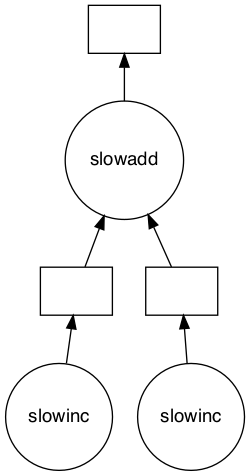

import daskDask

- process data that doesn’t fit into memory by breaking it into blocks and specifying task chains
- parallelize execution of tasks across cores and even nodes of a cluster
- move computation to the data rather than the other way around, to minimize communication overheads
http://dask.pydata.org/en/latest/
Define two slow functions
from time import sleep
def slowinc(x, delay=1):
sleep(delay)
return x + 1
def slowadd(x, y, delay=1):
sleep(delay)
return x + y%%time
x = slowinc(1)
y = slowinc(2)
z = slowadd(x, y)CPU times: user 1.1 ms, sys: 1.59 ms, total: 2.69 ms
Wall time: 3 sParallelize with dask.delayed
- Functions wrapped by
dask.delayeddon’t run immediately, but instead put those functions and arguments into a task graph. - The result is computed separately by calling the
.compute()method.
from dask import delayedx = dask.delayed(slowinc)(1)
y = dask.delayed(slowinc)(2)
z = dask.delayed(slowadd)(x, y)%%time
z.compute()CPU times: user 2.17 ms, sys: 1.78 ms, total: 3.95 ms
Wall time: 2.01 s5Some questions to consider:
- Why did we go from 3s to 2s? Why weren’t we able to parallelize down to 1s?
- What would have happened if the inc and add functions didn’t include the
sleep(1)? Would Dask still be able to speed up this code? - What if we have multiple outputs or also want to get access to x or y?
Dask graph
- Contains description of the calculations necessary to produce the result.
- The z object is a lazy Delayed object. This object holds everything we need to compute the final result. We can compute the result with .compute() as above or we can visualize the task graph for this value with .visualize().
z.visualize()
Parallelize a loop
%%time
data = list(range(8))
tasks = []
for x in data:
y = slowinc(x)
tasks.append(y)
total = sum(tasks)
totalCPU times: user 1.27 ms, sys: 2.14 ms, total: 3.42 ms
Wall time: 8.01 s36Exercise 8.1
- Parallelize this by appending the delayed
slowinccalls to the listresults. - Display the graph of
totalcomputation - Compute time elapsed for the computation.
Decorator
It is also common to see the delayed function used as a decorator. Same example:
%%time
@dask.delayed
def slowinc(x, delay=1):
sleep(delay)
return x + 1
@dask.delayed
def slowadd(x, y, delay=1):
sleep(delay)
return x + y
x = slowinc(1)
y = slowinc(2)
z = slowadd(x, y)
z.compute()CPU times: user 3.01 ms, sys: 2.53 ms, total: 5.55 ms
Wall time: 2.01 s5z.visualize()Control flow
- Delay only some functions, running a few of them immediately. This is helpful when those functions are fast and help us to determine what other slower functions we should call.
- In the example below we iterate through a list of inputs. If that input is even then we want to call
half. If the input is odd then we want to callodd_process. This iseven decision to callhalforodd_processhas to be made immediately (not lazily) in order for our graph-building Python code to proceed.
from random import randint
import dask.delayed
def half(x):
sleep(1)
return x // 2
def odd_process(x):
sleep(1)
return 3*x+1
def is_even(x):
return not x % 2
data = [randint(0,100) for i in range(8)]
result = []
for x in data:
if is_even(x):
result.append(half(x))
else:
result.append(odd_process(x))
total = sum(result)Exercise 8.2
- Parallelize the sequential code above using dask.delayed
- You will need to delay some functions, but not all
- Visualize and check the computed result
Exercise 8.3
- Parallelize the hdf5 conversion from json files
- Create a function
convert_to_hdf - Use dask.compute function on delayed calls of the funtion created list
- Is it really faster as expected ?
Hint: Read Delayed Best Practices
import os # library to get directory and file paths
import tarfile # this module makes possible to read and write tar archives
def extract_data(name, where):
datadir = os.path.join(where) # directory where extract all datafile
if os.path.exists(datadir): # check if this directory exists
print("Extracting data...")
tar_path = os.path.join(name) # path to the tgz file
with tarfile.open(tar_path, mode='r:gz') as data: # open the tgz file
data.extractall(datadir) # extract all data file in datadir
extract_data('data/daily-stock.tgz','data') # this function call will extract json filesExtracting data...import dask
import os, sys
from glob import glob
import pandas as pd
import json
here = os.getcwd() # get the current directory
filenames = sorted(glob(os.path.join(here,'data', 'daily-stock', '*.json')))filenames[:5]['/Users/navaro/PycharmProjects/big-data/notebooks/data/daily-stock/aet.json',
'/Users/navaro/PycharmProjects/big-data/notebooks/data/daily-stock/afl.json',
'/Users/navaro/PycharmProjects/big-data/notebooks/data/daily-stock/aig.json',
'/Users/navaro/PycharmProjects/big-data/notebooks/data/daily-stock/al.json',
'/Users/navaro/PycharmProjects/big-data/notebooks/data/daily-stock/amgn.json']%rm data/daily-stock/*.h5rm: data/daily-stock/*.h5: No such file or directoryExercise: Parallelizing a Pandas Groupby Reduction
In this exercise we read several CSV files and perform a groupby operation in parallel. We are given sequential code to do this and parallelize it with dask.delayed.
The computation we will parallelize is to compute the mean departure delay per airport from some historical flight data. We will do this by using dask.delayed together with pandas. In a future section we will do this same exercise with dask.dataframe.
Prep data
First, run this code to prep some data. You don’t need to understand this code.
This extracts some historical flight data for flights out of NYC between 1990 and 2000. The data is taken from here. This should only take a few seconds to run.
Inspect data
Data are in the file data/nycflights.tar.gz. You can extract them with the command
tar zxvf nycflights.tar.gzAccording to your operating system, double click on the file could do the job.
extract_data('data/nycflights.tar.gz','data')Extracting data...Read one file with pandas.read_csv and compute mean departure delay
import pandas as pd
df = pd.read_csv(os.path.join("data", "nycflights",'1990.csv'))
df.head()| Year | Month | DayofMonth | DayOfWeek | DepTime | CRSDepTime | ArrTime | CRSArrTime | UniqueCarrier | FlightNum | ... | AirTime | ArrDelay | DepDelay | Origin | Dest | Distance | TaxiIn | TaxiOut | Cancelled | Diverted | |
|---|---|---|---|---|---|---|---|---|---|---|---|---|---|---|---|---|---|---|---|---|---|
| 0 | 1990 | 1 | 1 | 1 | 1621.0 | 1540 | 1747.0 | 1701 | US | 33 | ... | NaN | 46.0 | 41.0 | EWR | PIT | 319.0 | NaN | NaN | 0 | 0 |
| 1 | 1990 | 1 | 2 | 2 | 1547.0 | 1540 | 1700.0 | 1701 | US | 33 | ... | NaN | -1.0 | 7.0 | EWR | PIT | 319.0 | NaN | NaN | 0 | 0 |
| 2 | 1990 | 1 | 3 | 3 | 1546.0 | 1540 | 1710.0 | 1701 | US | 33 | ... | NaN | 9.0 | 6.0 | EWR | PIT | 319.0 | NaN | NaN | 0 | 0 |
| 3 | 1990 | 1 | 4 | 4 | 1542.0 | 1540 | 1710.0 | 1701 | US | 33 | ... | NaN | 9.0 | 2.0 | EWR | PIT | 319.0 | NaN | NaN | 0 | 0 |
| 4 | 1990 | 1 | 5 | 5 | 1549.0 | 1540 | 1706.0 | 1701 | US | 33 | ... | NaN | 5.0 | 9.0 | EWR | PIT | 319.0 | NaN | NaN | 0 | 0 |
5 rows × 23 columns
# What is the schema?
df.dtypesYear int64
Month int64
DayofMonth int64
DayOfWeek int64
DepTime float64
CRSDepTime int64
ArrTime float64
CRSArrTime int64
UniqueCarrier object
FlightNum int64
TailNum float64
ActualElapsedTime float64
CRSElapsedTime int64
AirTime float64
ArrDelay float64
DepDelay float64
Origin object
Dest object
Distance float64
TaxiIn float64
TaxiOut float64
Cancelled int64
Diverted int64
dtype: object# What originating airports are in the data?
df.Origin.unique()array(['EWR', 'LGA', 'JFK'], dtype=object)# Mean departure delay per-airport for one year
df.groupby('Origin').DepDelay.mean()Origin
EWR 9.168411
JFK 11.857274
LGA 8.560045
Name: DepDelay, dtype: float64Sequential code: Mean Departure Delay Per Airport
The above cell computes the mean departure delay per-airport for one year. Here we expand that to all years using a sequential for loop.
from glob import glob
filenames = sorted(glob(os.path.join('data', "nycflights", '*.csv')))
filenames['data/nycflights/1990.csv',
'data/nycflights/1991.csv',
'data/nycflights/1992.csv',
'data/nycflights/1993.csv',
'data/nycflights/1994.csv',
'data/nycflights/1995.csv',
'data/nycflights/1996.csv',
'data/nycflights/1997.csv',
'data/nycflights/1998.csv',
'data/nycflights/1999.csv']%%time
sums = []
counts = []
for fn in filenames:
# Read in file
df = pd.read_csv(fn)
# Groupby origin airport
by_origin = df.groupby('Origin')
# Sum of all departure delays by origin
total = by_origin.DepDelay.sum()
# Number of flights by origin
count = by_origin.DepDelay.count()
# Save the intermediates
sums.append(total)
counts.append(count)
# Combine intermediates to get total mean-delay-per-origin
total_delays = sum(sums)
n_flights = sum(counts)
mean = total_delays / n_flightsCPU times: user 4.48 s, sys: 946 ms, total: 5.42 s
Wall time: 5.47 smeanOrigin
EWR 10.295469
JFK 10.351299
LGA 7.431142
Name: DepDelay, dtype: float64Exercise : Parallelize the code above
Use dask.delayed to parallelize the code above. Some extra things you will need to know.
Methods and attribute access on delayed objects work automatically, so if you have a delayed object you can perform normal arithmetic, slicing, and method calls on it and it will produce the correct delayed calls.
x = delayed(np.arange)(10) y = (x + 1)[::2].sum() # everything here was delayedCalling the
.compute()method works well when you have a single output. When you have multiple outputs you might want to use thedask.computefunction:>>> x = delayed(np.arange)(10) >>> y = x ** 2 >>> min, max = compute(y.min(), y.max()) (0, 81)This way Dask can share the intermediate values (like
y = x**2)
So your goal is to parallelize the code above (which has been copied below) using dask.delayed. You may also want to visualize a bit of the computation to see if you’re doing it correctly.